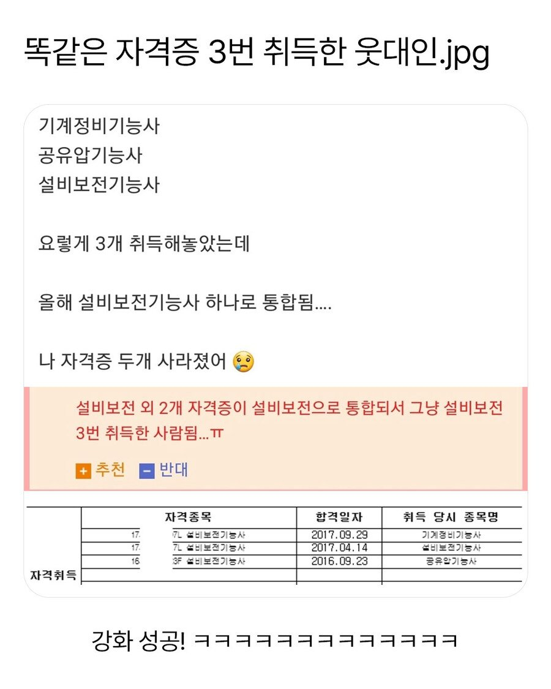

★3 설비보전기능사
ㄷㄷㄷ

★3 설비보전기능사
ㄷㄷㄷ
설비보전기능사 2성 떳네 9렙 달리자
저정도면 산업기사 정도쳐줘야하지않나ㅋㅋㅋㅜ 불쌍
설비보전기능사 2돌 에반데 ㅋㅋㅋㅋ
황금 설비보전기능사를 만드실수 있겠군요!
와우! 황금 히히자격증!

업글하나 해줘라ㅋㅋ
오 2초월 ㄷㄷ
난 특수용접 있는데 이거 알곤용접이랑 Co2용접으로 갈라졌던데ㅋㅋㅋㅋㅋㅋ
아니 여긴 자격증이 복사가 된다구요...!!
선생님 저도 용접좀 알려주십쇼;;; 직장좀 때려 치고싶습니다
줄 서셈. 할 줄아는게 도면 수직 수평 잘 긋는 거라. 나도 해야함.
용접으로 돈 제대로 벌려면 최소 7년 해야됨
그리고 돈 되는건 알곤용접이고 co2나 일반아크용접은 돈이안됨
기본 일단도 높지 않아요 형님?
일당 높긴하지만 파이프 하나에 천만원 용접봉 1키로에 십만원이상 하는 용접이랑 파이프랑 용접봉 다 해도 100만원이 안되는 용접이랑 돈 받는게 다를수밖에없음
거기다가 너가 용접 막 시작했다고하면 이미 용접자리에는 날고기는양반들이 엉덩이 붙이고있는데 널 돈 많이줘가면서 쓸 이유가없음 그래서 초반엔 고생은 고생대로하고 돈도 편돌이나 다름없게 줌
이거 몇년씩 버틸수있으면 하십시오 휴먼
그냥 늘 하던 광고일이나 계속 하겠습니다 형님;;
하던거 열심히 하는게 좋음
너처럼 용접 돈 많이주지않냐? 하는사람들 용접하는회사 들어오면 점심시간에 도망가더라ㅋㅋㅋ
★★
나도 옛날에 워드프로페서랑 엑셀인가 뭐 땃는데
하나로 통합돼서 사라짐
돌파 달달하네 ㅋㅋ
그렇다는건 3개가 거의 겹치는 내용이 많아서 취득이 쉬웠다는거지
황금카드를 얻으실 수 있겠군요!
자격증으로 캔디크러쉬하네ㅋㅋ
응시료만 아까워졋네
저정도면 초설비보전기능사 같은거 만들어줘야하는거아님? ㅋ
3급 3개면 1급 줘야지ㅡㅜ
3개 모았으면 합성해서 산업기사 나와야 되는 거 아님? ㅋㅋㅋ
난 겹칠일 없어서 다행이다 ^오^
난 일반기계가 두개인데
설계가 작업형 훨씬 어려워서 설계땄다고 함
근데 호환성이 높아서
기본지식만으로도 붙을만한거라 크게 열받을건 없음
근데 원서접수비는 환불해줘야되는것 아님?
2돌했네
이거랑 별개로 옛날에 컴활3급 땄는데
지금은 폐지되서 취급도 안해줌
단 설비보전기능사 2돌은 예외임
난공유압잇는데 설보됨ㅋㅍ
+3강